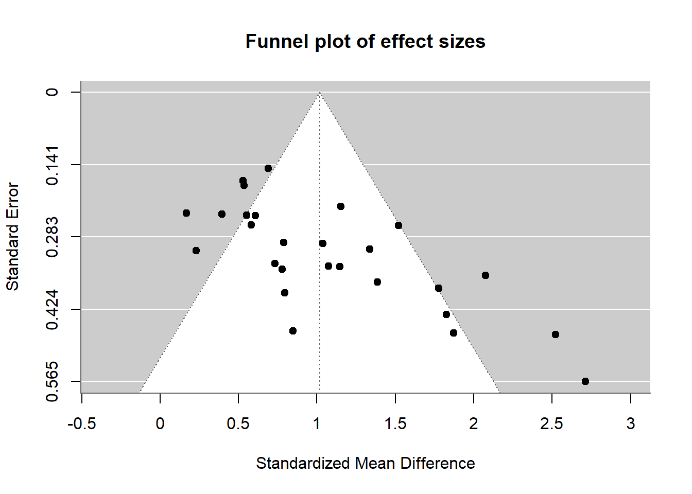

Random-Effects Model (k = 27; tau^2 estimator: REML)
logLik deviance AIC BIC AICc
-24.9568 49.9137 53.9137 56.4299 54.4354
tau^2 (estimated amount of total heterogeneity): 0.2511 (SE = 0.0967)
tau (square root of estimated tau^2 value): 0.5011
I^2 (total heterogeneity / total variability): 76.54%
H^2 (total variability / sampling variability): 4.26
Test for Heterogeneity:
Q(df = 26) = 92.7894, p-val < .0001
Model Results:
estimate se zval pval ci.lb ci.ub
1.0175 0.1143 8.8997 <.0001 0.7934 1.2416 ***
---
Signif. codes: 0 '***' 0.001 '**' 0.01 '*' 0.05 '.' 0.1 ' ' 1
Overall, the results show that boys tend to prefer male-typed toys more than girls do, and this difference is clear and consistent across studies. However, the size of the difference isn’t the same in every study, which means that things like how the study was done or where it took place might have an impact.
2. Create a Funnel Plot
funnel(res, main ="Funnel plot of effect sizes")

The funnel plot looks mostly symmetrical, with studies spread fairly evenly on both sides of the average effect. There are a few more studies on the right, but nothing extreme. This suggests that there’s probably no major publication bias.
3. Do Study Methods Affect Results?
res_mod_neutral <-rma(yi, vi, mods =~factor(neutral_toys), data = meta_data)summary(res_mod_neutral)
The way the studies were set up — like whether neutral toys were included, where the play took place, or how involved parents were — didn't really make a big difference in the results. None of these study features had a clear impact on how strong the gender difference in toy preference was. So, while the overall effect is strong, it seems to show up regardless of how the study was run.
After including all the quality-related variables that actually varied between studies, none of them showed a strong or consistent effect on the results. The overall test for moderators wasn't significant, and none of the individual quality items clearly predicted differences in the gender effect. So, even though study quality was carefully assessed, it doesn't seem to explain why some studies found stronger effects than others.
Whether the authors were mostly women or not didn't make a difference in the results. The size of the gender difference in toy preferences was similar regardless of the gender makeup of the research team. So, there's no sign that author gender influenced how the findings turned out.